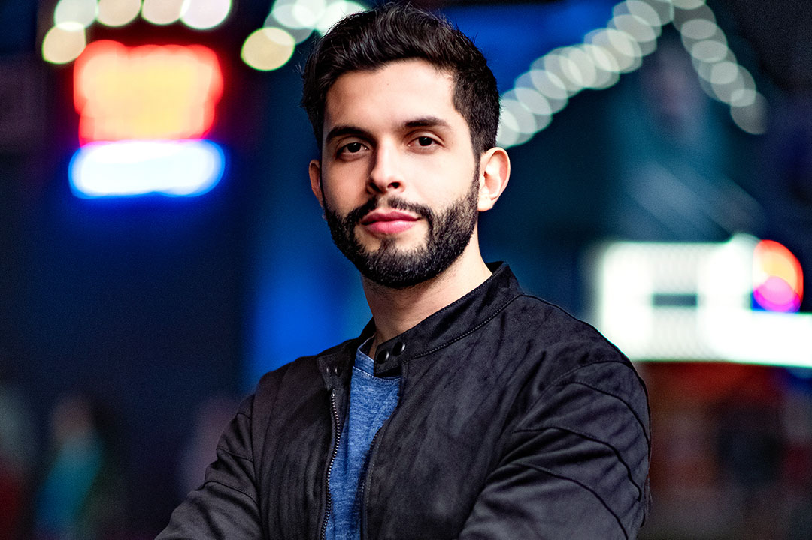
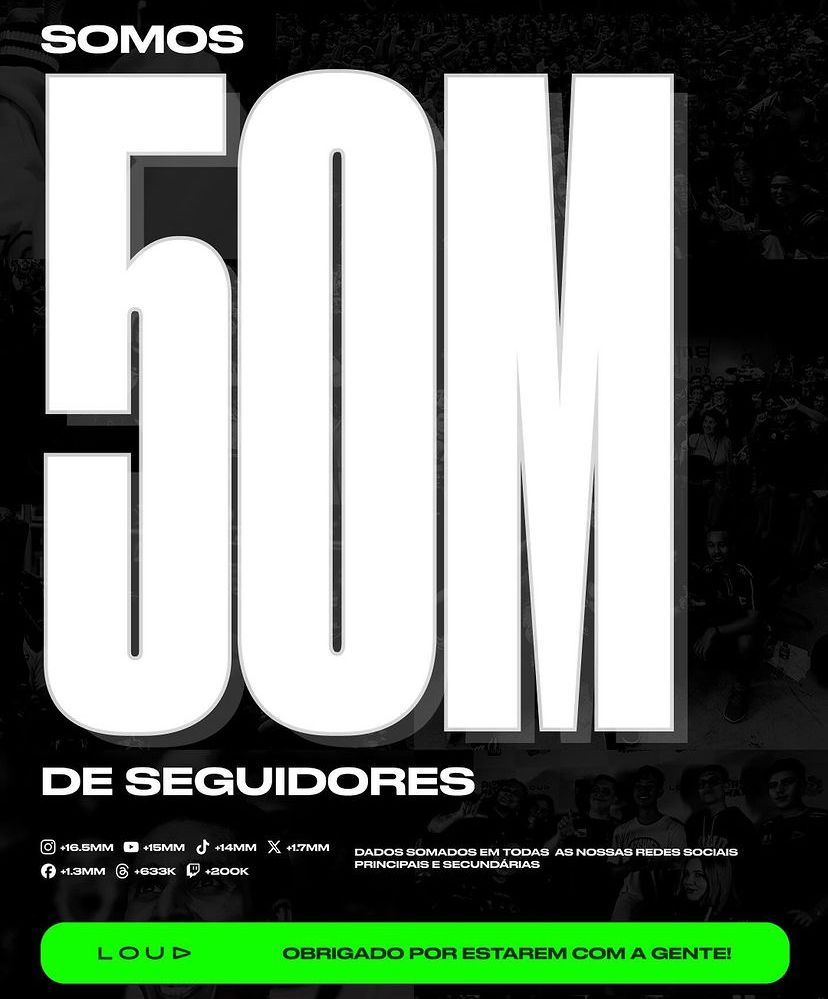

Como surgiu a LOUD?
A LOUD surgiu em 2019, criada pelo influenciador Bruno "PlayHard" e pelos empresários Jean Ortega e Matthew Ho. Inicialmente, a organização participava apenas em Free Fire, mas, ao longo dos anos, expandiu sua presença para games como Fortnite, League of Legends e Valorant. A LOUD possui enorme foco em criação de conteúdo e investe pesado nas redes sociais, sendo a primeira equipe de esports a atingir a marca de 1 bilhão de visualizações no YouTube.
O maior time do Brasil!
Atualmente a Loud ultrapassou a marca de 50Mi de seguidores somando todas as suas redes sociais, sendo considerado o MAIOR time de E-sports do Brasil, liderando com quase 12Mi de seguidores somente no Instagram
